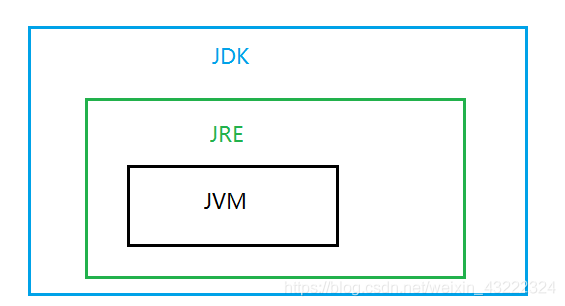
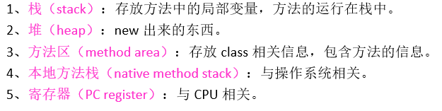
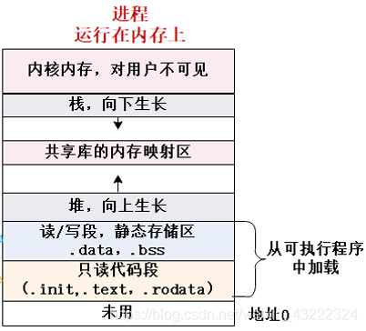
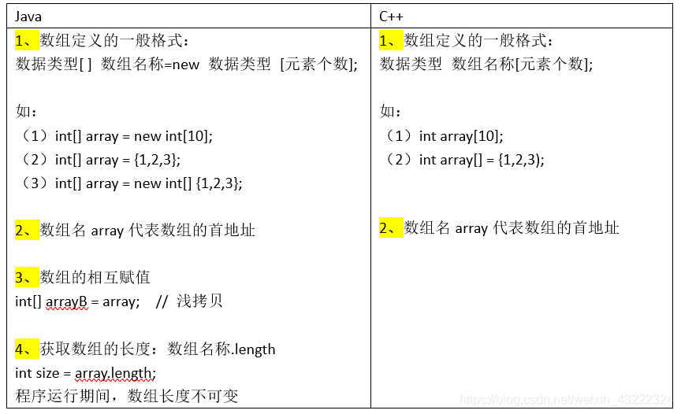
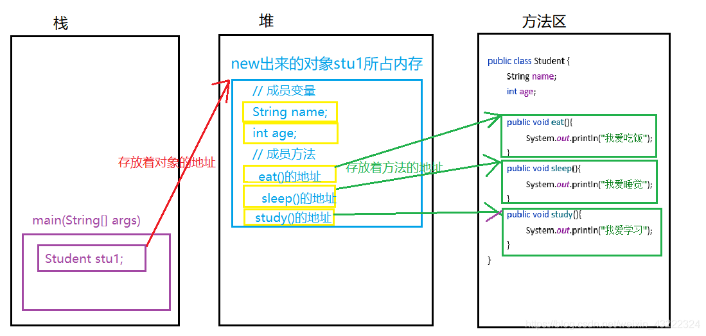
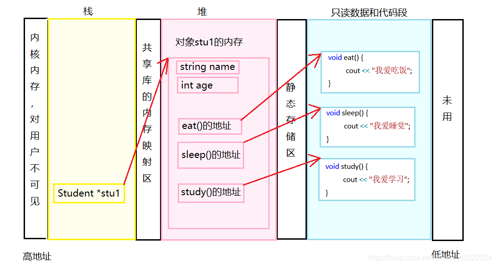

CPP转Java快速入门
有C++基础，Java零基础。想学Java。目前我采用的方法是：
先看一些Java入门视频（B站、腾讯课堂到处都有）快速了解Java这门语言，包括IDE怎么使用、基本输入输出、基本数据类型等，发现好些基础知识都差不多，毕竟都是面向对象的语言。
然后力扣做题，先用C++写一遍，做题思路保持不变，将C++里用到的API替换成Java的（比如你这道题是用C++的unordered_map写的，你用Java写的时候换成对应的HashMap写一遍，遇到不知道的就去百度一下），用Java多刷几道题就大概能记住那些类的使用方法了，这时候基本上就会用Java写代码了。
会用Java写代码算是刚刚入门了，如果想要代码写得好，必须要掌握语言的特性，包括Java各种类的底层原理什么的，这些可以买本书看。推荐书籍《Java核心技术》。
要想深入学习Java，看书肯定不够啊，去GitHub上找点项目做，然后在工作中实践等等
由于博主初学Java，下面的内容如有错误的地方，还望各位Java大佬指出来。
1、IDE选择
- 免费：Eclipse、IntelliJ Idea社区版
- 收费：IntelliJ Idea旗舰版
- 附上IntelliJ Idea官网下载链接
2、JVM、JRE与JDK
- JVM（Java Virtual Machine），Java虚拟机，JVM 是 Java 能够跨平台的核心。
- JRE（Java Runtime Envirnment），Java运行环境，JRE相对于 JVM，多了 Java 基础类库，你写好的Java程序需要有JRE才能运行。
- JDK（Java Development Kit) ，Java 开发工具包，包含了Java运行环境（JRE）、Java工具和Java基础的类库。你写的Java程序如果要调试，需要有JDK，由于JDK包含了JRE，JRE包含了JVM，因此你的IDE只要装了JDK就不需要额外装JRE和JVM了。

3、Java和C++相同的一些基础知识
-
基本数据类型：char、int、long、double……
布尔类型不同（Java boolean，C++ bool） -
运算符：+、-、*、\、%、++、–、=、&&、||、！、<、>、==……
-
判断语句：if、switch
-
循环语句：普通for语句、while语句、do-while语句
-
continue、break、 关系表达式？表达式1：表达式2 用法相同。
-
类同样有封装、继承、多态等概念；有private、pubic、this、static 等关键字；有构造函数，用法类似。
-
方法（函数）同样有定义、调用、重载等概念。
4、内存模型
| java | C++ |
|---|---|
|  |  |
5、数组

6、类的定义与使用

类的内存模型
仍以前面的代码为例，学生类Student实例化了一个对象stu1。
Java
在main()方法中使用类Student，先实例化一个对象stu1，对象stu1占用堆内存，stu1的内存中又存放着类Student的各个方法的地址。

C++

若类有虚函数的情况，请看图解C++多态，虚函数、虚函数表、虚指针、重写与覆盖
接下来是常用API的对比
1、输入 --------------------------------------
Java------Scanner
// 导包
import java.util.Scanner;
// System.in 代表从键盘进行输入
Scanner sc = new Scanner(System.in);
// 获取键盘上输入的int型数据
int number = sc.nextInt();
// 输出看看
System.out.println(number);
// 获取键盘上输入的字符串
String str=sc.next();
// 输出看看
System.out.println(str);
C++ ------cin
// 包含头文件
#include <iostream>
// 输入int型数据
int number;
cin >> number;
// 输入string型数据
string str;
cin >> str;
// 输出看看
cout << number << endl << str << endl;
2、随机数 --------------------------------------------------------------
Java------Random
// 导包
import java.util.Random;
// 使用
Random ran=new Random();
// 输出范围为INT_MIN~INT_MAX的10个随机数
for(int i=0;i<10;i++) {
System.out.println(ran.nextInt());
}
// 输出范围为[0,n)的10个随机数
int n=5;
for (int i = 0; i < 10; i++) {
System.out.println(ran.nextInt(n));
}
C++ ------rand
// 包含头文件
#include <stdlib.h>
// 使用
// 设置种子，如果不设置，种子默认为1
srand(1);
// 输出100个伪随机数
for (int i = 0; i < 10; ++i) {
cout << rand() << " ";
}
3、动态数组 ----------------------------------------------------------
Java------ArrayList
| ArrayList<E> list = new ArrayList(); | 创建一个名为list的空数组链表，存放E类型的对象 |
|---|---|
| ArrayList<E> list = new ArrayList(n); | 创建一个数组链表list，存放E类型的对象，初始容量大小为n |
| list.get(index); | 访问下标为index的元素 |
| Object[] c=list.toArray(); | 获取一个数组c，c中所有元素是数组链表中的元素，即将数组链表转换为一个数组 |
| list.set(index,element); | 将下标为index的元素修改为element |
| list.add(element); | 在list的尾部添加元素element |
| list.add(index,element); | 在list的下标为index的位置添加元素element |
| list.remove(index); | 删除下标为index的元素 |
| list.clear(); | 删除所有元素 |
| list.size(); | 返回值为数组链表的大小 |
| list.isEmpty(); | 数组链表为空则返回true，否则返回false |
| list.contains(element); | 数组链表中包含元素element则返回true，否则返回false |
| list.indexOf(element); | 返回元素element在数组链表中第一次出现的位置，如果链表中没有这个元素则返回-1 |
| list.lastIndexOf(element); | 返回元素element在数组链表中最后一次出现的位置，如果链表中没有这个元素则返回-1 |
上表中<>尖括号内E代表泛型，泛型只能是引用类型比如String，不能是基本类型比如int，如果希望用ArrayList存储基本类型的数据，必须使用基本类型对应的引用类型，对应关系见下表。
| 基本类型 | 引用类型 |
|---|---|
| byte | Byte |
| boolean | Boolea |
| char | Character |
| short | Short |
| int | Integer |
| long | Long |
| float | Float |
| double | Double |
C++ ------vector
4、字符串 ----------------------------------------------------------
Java------String
| 初始化 | |
|---|---|
| String s1 = new String(“hello world！”); | 创建一个字符串对象，内容为"hello world！" |
| String s1 = “hello world！”; | 创建一个字符串对象，内容为"hello world！" |
| String s1 = new String(); | 创建一个空字符串对象 |
| char c1[] = {‘h’,‘e’,‘l’,‘l’,‘o’}; String s1 = new String(c1); | 创建一个字符串对象，内容为"hello" |
| byte b1[]={104,101}; String s1 = new String(b1); | 创建一个字符串对象，内容为"he" |
| 查找 | |
|---|---|
| s1.contains(String s2); | s1中包含s2则返回true，否则返回false |
| s1.charAt(int index); | 返回下标为index的字符 |
| s1.indexOf(char element); | 返回字符element在s1中第一次出现的位置，如果s1中没有则返回-1 |
| s1.indexOf(char element,int index); | 返回字符element 从s1的index位置开始，第一次出现的位置，如果没有则返回-1 |
| s1.indexOf(String s2); | 返回字符串s2在s1中第一次出现的位置，如果s1中没有s2则返回-1 |
| s1.indexOf(String s2,int index); | 返回字符串s2 从s1的index位置开始，第一次出现的位置，如果没有则返回-1 |
| s1.lastIndexOf(char element); | 返回字符element在s1中最后一次出现的位置，如果s1中没有则返回-1 |
| s1.lastIndexOf(char element,int index); | 返回字符element 从s1的index位置开始，最后一次出现的位置，如果没有则返回-1 |
| s1.lastIndexOf(String s2); | 返回字符串s2在s1中最后一次出现的位置，如果s1中没有则返回-1 |
| s1.lastIndexOf(String s2,int index); | 返回字符串s2 从s1的index位置开始，最后一次出现的位置，如果没有则返回-1 |
| 比较 | |
|---|---|
| s1.equals(s2); | s1与s2相等则返回true，否则返回false |
| s1.equalsIgnoreCase(s2); | 忽略大小写的情况下，s1与s2相等则返回true，否则返回false |
| s1.compareTo(s2); | 比较s1与s2的大小，s1>s2返回正数，s1=s2返回0，否则返回负数 |
| s1.compareToIgnoreCase(s2); | 忽略大小写的情况下，比较s1与s2的大小，s1>s2返回正数，s1=s2返回0，否则返回负数 |
| 替换 | |
|---|---|
| String result=s1.replace(oldChar,newChar); | 将s1中的字符oldChar替换为字符newChar,结果保存在result中 |
| String result=s1.replace(target,replacement); | 将s1中的字符串target替换为字符串replacement，结果保存在result中 |
| String result=s1.replaceAll(target,replacement); | 将s1中的target全部替换为replacement，结果保存在result中，target和replacement都是正则表达式 |
| String result=s1.replaceFirst(target,replacement); | 将s1中的第一个target替换为replacement，结果保存在result中，target和replacement都是正则表达式 |
| 其他 | |
|---|---|
| s1.length(); | 返回值为字符串的长度 |
| s1.isEmpty(); | 字符串为空则返回true，否则返回false |
| String result=s1.substring(index); | 得到s1从下标index开始的子串，结果保存在result中 |
| String result=s1.substring(index1,inex2); | 得到s1从下标index1开始到下标index2结束的子串（左闭右开），结果保存在result中 |
| String result=s1.toLowerCase(); | 将s1中的大写字符变换成对应的小写字母，结果保存在result中 |
| String result=s1.toUpperCase(); | 将s1中的小写字符变换成对应的大写字母，结果保存在result中 |
| String result=s1.concat(s2); | 将s1和s2拼接后的结果保存在result中，注意，s1、s2的值不会改变 |
| String result[]=s1.split(regex); | 根据正则表达式regex将s1拆分开，结果保存在result[]字符串数组中 |
C++ ------string
5、操作数组的工具类 ----------------------------------------------
Java------Arrays
| int[] a=new int[]{8,1,2,3,7,5,4,6,7,0}; | 以数组名为a进行举例 |
| System.out.println(Arrays.toString(a)); | 打印数组 |
| Arrays.sort(a); | 对整个数组排序 |
| Arrays.sort(a,index1,index2); | 对下标i范围为ndex1~index2（左闭右开）的元素进行排序 |
| int result=Arrays.binarySearch(a,target); | 二分查找元素target，若找到则返回target的索引，否则返回负数 |
| Arrays.fill(a,value); | 将数组元素全部填充为value |
| Arrays.fill(a,index1,index2,value); | 将下标从index1开始到index2的元素（左闭右开），填充为value |
| int[] b=Arrays.copyOf(a,length); | 将数组a的前length个元素拷贝给数组b |
| int[] c=Arrays.copyOfRange(a,index1,index2); | 将数组a的下标从index1开始到index2的元素拷贝给数组b |
程序示例
int[] a=new int[]{8,1,2,3,7,5,4,6,7,0};
// 打印
System.out.println(Arrays.toString(a)); // toString(a)打印数组
// 排序
Arrays.sort(a,0,5); // 只对下标0~5（左闭右开）的元素进行排序
Arrays.sort(a); // 对整个数组排序
// 二分查找
int r1=Arrays.binarySearch(a,7); // 得到查找的结果的索引，未找到则返回负数
System.out.println(r1);
// 填充
Arrays.fill(a,1); // 将数组元素全部替换成1
Arrays.fill(a,0,5,0); // 将下标从0开始到5的元素（左闭右开），填充为0
System.out.println(Arrays.toString(a)); // toString(a)打印数组
// 复制数组
int[] b=Arrays.copyOf(a,5); // 复制数组的前5个元素
int[] c=Arrays.copyOfRange(a,3,7); // 复制下标从3到7的元素
6、Math类 ----------------------------------------------
程序示例
double a = 1.2038456;
double b = 1.2038456;
double result1 = Math.floor(a); // 向下取整
double result2 = Math.ceil(a); // 向上取整
double result3 = Math.round(a); // 四舍五入
double result4 = Math.max(a,b); // 最大值
double result5 = Math.min(a,b); // 最小值
double result6 = Math.abs(a); // 绝对值
double result7 = Math.pow(a,b); // 幂函数
double result8 = Math.sqrt(a); // 平方根
C++到Java的转换工具是我们自己公司试用的破解版非试用版, 注意这个工具在 csdn 有个下载需要分数很高的那个而且文件大小不到1M, 那个是试用版, 有1000行代码限制。
2
博主原本的语言是c++，好不容易上手了，刷算法题也熟练了一些，因为实习的缘故不得不开始接触java。下面总结一些c++和java的区别，有c++基础的人可以对照学习java。
一、从变量和数据类型上
1、数据类型
Java语言提供了八种基本类型，Java没有无符号整数。（无符号右移在Java中强制用三个右尖括号表示）
- 六种数字类型（byte,short,int,long,float,duble）
- 一种字符类型 (char)
- 一种布尔型 (boolean)
java和c++都支持布尔类型的数据，但是java实现true和false的方式与c++不同。在c++中，true是非零值，false是0.而java中，true和false是一个布尔表达式能得到的唯一的两个值，不会出现像c++一样把非0转为true的情况。
2、字符串
Java有内置类型String，而C++没有。C++的std::string是可变的，类似于Java的StringBuffer。（String，StringBuffer，StringBuilder三者异同）。java中的String一旦定义了就是个常量，不能被修改。
比较字符串时，c++由于重写了“= =” 因此可用于比较，而java中不能用“==”，要用string的方法.equals()
3、数组
（1）java定义数组的方式：
int[] array1=new int[100];//常用方式
int array2[];//数组维度无需确定
相比较，c++的声明方式为：
int *array1=new int[100];
int array2[10];//数组维度必须是确定的
（2）java可以进行数组拷贝，c++则是用指针或引用的形式实现这样的目的。java可以用如下方式：
int[] oddNum={1,3,5,7};
int[] copy=Arrays.copyOf(oddNum,oddNum.length);
4、C++的整型随机器的位数而变化，但是Java不会。（C++的int在16位机器上16位，32位级以上为32位。long在32位及以下为32位，64位机器上为64位。）
5、Java中不存在指针和引用（这点真的很不习惯。。比如写两个数交换的字方法时，c++可以愉快的用引用传参）。Java的引用是功能弱化的指针，只能做“调用所指对象的方法”的操作。
6、java具有方法重载的能力，但不支持操作符重载
7、java新增了三个右移位运算符">>>"，具有与“逻辑”右移位运算符类似的功能，可在最末尾插入0值。“>>"则在移位的同时插入符号位。
8、类型转换
c++中有时出现数据类型的隐含转换，这就涉及强制类型转换的问题。比如，c++中可以将一个浮点数赋予整型变量，去掉小数部分。java不支持c++中的自动强制类型转换，如果需要转换，必须由程序员进行显式的转换。如：
二、循环语句
写循环语句时，c++中可以直接用while(1), while(a),if(num)这种方式来做循环进行或终止的条件，而java中，括号里的表达式只能是布尔类型，如while(a!=10), while(b>1)这种写法。
java中没有goto语句
三、类机制
和c++相比，java所有东西必须置入一个类，即使是main函数pubpc static void man（String[ ] args）也要放在类里面。java是完全面向对象的语言，不再支持c++所用的过程式的设计方法，所有的函数和变量必须是类的一部分。除了基本数据类型之外，其他的数据对java来说都是对象，包括数组。
我们新建一个java文件时，这个文件名必须要与文件中定义的类名相同。一个java文件中必须要有至少一个pubpc的类。
java不存在全局函数或者全局数据，如果想获得全局的功能，可以将static方法和static数据置入一个类里面。而c++允许将函数和变量定义为全局的。此外，java中取消了c++结构中的联合，枚举这类东西，一切只有“类”（class）。
与c++相比，java中不存在inpne函数，没有virtual关键字，不提供多重继承机制。java支持构造函数，但是没有c++中的析构函数（java中增加了finapze（）函数）。
Java中的继承具有与C++相同的效果，但采用的语法不同。Java用extends关键字标志从一个基础类的继承，并用super关键字指出准备在基础类中调用的方法，它与我们当前所在的方法具有相同的名字（然而，Java中的super关键字只允许我们访问父类的方法——亦即分级结构的上一级
四、包（package）
更好地组织类，Java 提供了包机制，用于区别类名的命名空间。 Java用包代替了命名空间。由于将所有东西都置入一个类，而且由于采用了一种名为“封装”的机制，它能针对类名进行类似于命名空间分解的操作，所以命名的问题不再进入我们的考虑之列。数据包也会在单独一个库名下收集库的组件。我们只需简单地“import”（导入）一个包，剩下的工作会由编译器自动完成。包的作用为：
把功能相似或相关的类或接口组织在同一个包中，方便类的查找和使用。
如同文件夹一样，包也采用了树形目录的存储方式。同一个包中的类名字是不同的，不同的包中的类的名字是可以相同的，当同时调用两个不同包中相同类名的类时，应该加上包名加以区别。因此，包可以避免名字冲突。
包也限定了访问权限，拥有包访问权限的类才能访问某个包中的类。
Java 使用包（package）这种机制是为了防止命名冲突，访问控制，提供搜索和定位类（class）、接口、枚举（enumerations）和注释（annotation）等。
包语句的语法格式为：
package pkg1[．pkg2[．pkg3…]];
例如,一个Something.java 文件它的内容
package net.java.util;
public class Something{
...
}
那么它的路径应该是 net/java/util/Something.java 这样保存的。 package(包) 的作用是把不同的 java 程序分类保存，更方便的被其他 java 程序调用。
五、预处理
java不再有#define，#include等预处理程序的功能，而c++语言很重要的一个特点就是它的预处理程序。#define的功能在java中我们可以用定义常数的方式来取代，而#include在java中是不需要的。
六、自动内存管理
Java程序中所有的对象都是用new操作符建立在内存堆栈上，这个操作符类似于c++的new操作符。Java自动进行无用内存回收操作，不需要程序员进行删除。而c++中必须由程序员释放内存资源，增加了程序设计者的负担。Java中当一个对象不被再用到时，无用内存回收器将给它加上标签以示删除。Java里无用内存回收程序是以线程方式在后台运行的，利用空闲时间工作。
七、java接口
接口并不是类，编写接口的方式和类很相似，但是它们属于不同的概念。类描述对象的属性和方法。接口则包含类要实现的方法。
除非实现接口的类是抽象类，否则该类要定义接口中的所有方法。
接口无法被实例化，但是可以被实现。一个实现接口的类，必须实现接口内所描述的所有方法，否则就必须声明为抽象类。另外，在 Java 中，接口类型可用来声明一个变量，他们可以成为一个空指针，或是被绑定在一个以此接口实现的对象。
接口与类相似点：
- 一个接口可以有多个方法
- 接口文件保存在 .java 结尾的文件中，文件名使用接口名
- 接口的字节码文件保存在 .class 结尾的文件中
- 接口相应的字节码文件必须在与包名称相匹配的目录结构中
接口与类的区别：
- 接口不能用于实例化对象。
- 接口没有构造方法。
- 接口中所有的方法必须是抽象方法。
- 接口不能包含成员变量，除了 static 和 final 变量。
- 接口不是被类继承了，而是要被类实现。
- 接口支持多继承。
接口特性:
接口中每一个方法也是隐式抽象的,接口中的方法会被隐式的指定为 public abstract（只能是 public abstract，其他修饰符都会报错）。
接口中可以含有变量，但是接口中的变量会被隐式的指定为 public static final 变量（并且只能是 public，用 private 修饰会报编译错误）。
接口中的方法是不能在接口中实现的，只能由实现接口的类来实现接口中的方法。
接口的声明语法格式如下：
interface 接口名称 [extends 其他的接口名] {
// 声明变量
// 抽象方法
}
/* 文件名 : NameOfInterface.java */
import java.lang.*;
//引入包
public interface NameOfInterface
{
//任何类型 final, static 字段
//抽象方法
}
实例：
/* 文件名 : Animal.java */
interface Animal {
public void eat();
public void travel();
}
八、数据结构的运用
c++中用STL容器来实现各类如堆栈，队列，数组等的运用。而java中使用collection接口实现的List，Map等。。。这一部分在算法题里应该会经常用到，说来话长。这里只能简单归纳总结一下。

List的实现类有：ArrayList、Vector、LinkedList；
Set的实现类有：HashSet、LinkedHashSet、TreeSet；
Map的实现类有：Hashtable、HashMap、ArrayMap、LinkedHashMap、TreeMap。
1、List
在List集合中允许出现重复的元素，所有元素是以一种线性方式进行存储的，在程序中可以通过索引来访问集合中的制定元素。并且List中元素有序，即，存入和取出顺序一致。
（1）ArrayList 就是动态数组，是Array的复杂版本，动态的增加和减少元素.当更多的元素加入到ArrayList中时,其大小将会动态地增长。它的元素可以通过get/set方法直接访问，因为ArrayList本质上是一个数组。
优点: 底层数据结构是数组Array，查询快，增删慢。
缺点: 线程不安全，效率高
（2）Vector 是比较早期会用的了，一般现在用得较少，和ArrayList类似, 底层数据结构是数组Array，查询快。增删慢。在于Vector是同步类(synchronized)，线程安全的，因此,开销就比ArrayList要大，效率低一些。
（3）LinkedList 是一个双链表,在添加和删除元素时具有比ArrayList更好的性能.但在get与set方面弱于ArrayList.当然,这些对比都是指数据量很大或者操作很频繁的情况下的对比。它还实现了 Queue 接口,该接口比List提供了更多的方法,包括 offer(),peek(),poll()等。
2、Set
（1）HashSet
- HashSet中不能有相同的元素，可以有一个Null元素，存入的元素是无序的。
- HashSet底层数据结构是哈希表，哈希表就是存储唯一系列的表，而哈希值是由对象的hashCode()方法生成。
（确保唯一性。当向HashSet集合中存入一个元素时，HashSet会调用该对象的hashCode()方法来得到该对象的hashCode值，然后根据 hashCode值来决定该对象在HashSet中存储位置。简单的说，HashSet集合判断两个元素相等的标准是两个对象通过equals方法比较相等，并且两个对象的hashCode()方法返回值相等）
- 添加、删除操作时间复杂度都是O(1)。
- 非线程安全。
（2）LinkedHashSet
LinkedHashSet集合同样是根据元素的hashCode值来决定元素的存储位置，底层数据结构由哈希表和链表组成，链表保证了元素的有序即存储和取出一致，哈希表保证了元素的唯一性。这样使得元素看起来像是以插入顺序保存的，也就是说，当遍历该集合时候，LinkedHashSet将会以元素的添加顺序访问集合的元素。
- LinkedHashSet中不能有相同元素，可以有一个Null元素，元素严格按照放入的顺序排列
- 添加、删除操作时间复杂度都是O(1)
- 非线程安全
（3）TreeSet
TreeSet是SortedSet接口的唯一实现类，TreeSet可以确保集合元素处于排序状态。TreeSet支持两种排序方式，自然排序和定制排序，其中自然排序为默认的排序方式。向TreeSet中加入的应该是同一个类的对象。
- TreeSet是中不能有相同元素，不可以有Null元素，根据元素的自然顺序进行排序。
- 底层的数据结构是红黑树(一种自平衡二叉查找树，保证元素的排序和唯一性)
- 添加、删除操作时间复杂度都是O(log(n))
- 非线程安全
总结：三者都保证了元素的唯一性，如果无排序要求可以选用HashSet；如果想取出元素的顺序和放入元素的顺序相同，那么可以选用LinkedHashSet。如果想插入、删除立即排序或者按照一定规则排序可以选用TreeSet。
3、Map

Hashtable、HashMap、TreeMap 都是最常见的一些 Map 实现，是以键值对的形式存储和操作数据的容器类型。
（1）HashMap（无序）
- HashMap是一个最常用的Map，它根据键的hashCode值存储数据，根据键可以直接获取它的值，具有很快的访问速度。
- HashMap最多只允许一条记录的键为null，不允许多条记录的值为null。
- HashMap是不安全的线程。它不支持线程的同步，即任一时刻可以有多个线程同时写HashMap，可能会导致数据的不一致。（如果需要同步，可以用Collections.synchronizedMap(HashMap map)方法使HashMap具有同步的能力）
一般情况下，我们用的最多的是HashMap,HashMap里面存入的键值对在取出的时候是随机的,它根据键的HashCode值存储数据,根据键可以直接获取它的值，具有很快的访问速度。在Map 中插入、删除和定位元素，HashMap 是最好的选择。
（2）Hashtable
- Hashtable与HashMap类似，不同的是：它不允许记录的键或者值为空；
- 是安全的线程支持线程的同步，即任一时刻只有一个线程能写Hashtable，然而，这也导致了Hashtable在写入时会比较慢。
（3）LinkedHashMap
LinkedHashMap保存了记录的插入顺序，在用Iteraor遍历LinkedHashMap时，先得到的记录肯定是先插入的。在遍历的时候会比HashMap慢。有HashMap的全部特性。
LinkedHashMap 是HashMap的一个子类，如果需要输出的顺序和输入的相同,那么用LinkedHashMap可以实现,它还可以按读取顺序来排列，像连接池中可以应用。
（4）TreeMap
- TreeMap能够把它保存的记录根据键排序，默认是按升序排序，也可以指定排序的比较器。当用Iteraor遍历TreeMap时，得到的记录是排过序的。
- TreeMap的键和值都不能为空。
HashMap通常比TreeMap快一点(树和哈希表的数据结构使然)，建议多使用HashMap，在需要排序的Map时候才用TreeMap。
C++转JAVA的一点感想
出于找工作的原因，在导师的建议下，学习了JAVA语言，深感JAVA编程之轻便，写一点感悟，并且简单的对比以下JAVA与C++的一些异同点，以便大家转JAVA的时候更加高效。
首先最大的不同在于Java没有指针，更准确的说是没有*以及&符号。从我的角度理解，Java声明的对象其实都是一个指针，指向了一个new 的对象或者一个已经存在的对象，所以我们不需要去delete，因为Java的后台会在对象引用计数为0的时候自动为我们清理内存，节约了很多时间和经历。因为Java没有指针，所以每一个Java的类都不需要写析构函数（方法）,这一点可以帮我们解决很多内存管理上的任务，让我们可以把更多的精力放在业务逻辑上。当然，C++11为我们提供了方便的智能指针，也可以起到类似的效果。
第二点就是Java没有宏定义。刚开始的时候给我带来了很多烦恼，因为经常和windows api打交道，习惯了用宏定义来为代码做标记(__in int k)以及用宏定义来做一些语句或者类型的替换（例如 TCHAR）。而且目前并没有发现相应的替代方案，希望可以在未来找到相应的解决方法吧~
第三点就是Java的包的概念，包与C++的namespace还是有很大的区别的，因为Java类中的成员变量被声明为default, protected, public均为包内可见，而namespace更多的是起到了避免重名的作用，所以Java在这一方面可以为我们提供更多的可能。
第四点是Java的泛型不需要template，这一点可让我少打好多字，特别是写二叉树，图遍历这些程序的时候，一坨一坨的方法需要不停的打template
是一个很让人恼火的事。Java为我们节约了很多时间，而且Java方法（函数）的实现和声明都在同一个.java文件中，可以少些很多诸如void BinaryTree :: Output(ostream& out)这种东西，也是很方便的，只是在一开始的时候会觉得很别扭，很乱。 第五点是Java只有单继承，但是可以继承多个接口，接口的概念与虚基类是有点像的，但是接口的属性必须是静态常量，这一点有点很难理解，但是在方法（函数）的继承与实现上并没有什么区别。接口更像是定义了某种规范，让我们在编程的时候必须实现某些特定的方法，这一点在多线程的Runnable接口中感触比较深（虽然它只有一个run()）。
第六点就是Java的数组是带下标检查的，可以防止我们出现越界的问题。并且可以很方便的初始化带参数的类对象数组，而C++就略显复杂（可以参见我的另一篇关于初始化唔默认构造函数的元素数组的博客）。
暂时能想到的就这么多，希望即将转Java的你可以提前避免很多因为曾经的习惯带来的语法错误。Java的学习还是比较简单的，跟随慕课网的Java入门课程可以很快入门并且写出很多小程序，至少用Java实现数据结构要比C++更方便一点。当然，C++的那种对内存的控制感是Java无法比拟的，但是语言毕竟只是工具，编程的思想与算法才是精髓，无论选择何种语言，都是表达自己思想的途径而已~
/2018年9月16日更新
写完这篇博客不久，我就放弃了JAVA的学习。总的来说，我学完了大部分的JAVA语法，可以顺利实现链表，排序，二叉树这些简单的算法和数据结构。学会了闭包，多线程，有很多感悟，因为Java的设计确实很巧妙，很多值得借鉴的思路。但是我觉得，作为一个IT狗，语言仅仅是一个工具，算法才是核心。如果在找工作的时候没有核心竞争力，公司就可以无情的压榨自己的劳动力，以为自己并非无可取代的那一个，或者说，自己随时可以被工资更低，屁事更少的新员工取代。最终我还是回归了C++开发。想写这次更新，主要是因为舍友经常问我一个问题，你还在搞你的C++吗？时至今日，我只能勉强说一句，是的。但是我从来没有研究过C++，甚至在自己的简历上仅仅写了熟练掌握C++。因为我一直在学习的是算法，只有算法的支撑，才能让我所搞的C++有灵魂，能够一直用C++开发程序。所以，希望看到这篇博客的你们，能够早一点避免追求各种新型的编程语言，而是可以潜心研究一下算法、数学这些内功，这样才不至于被别人轻松淘汰掉~